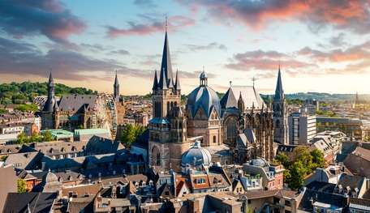
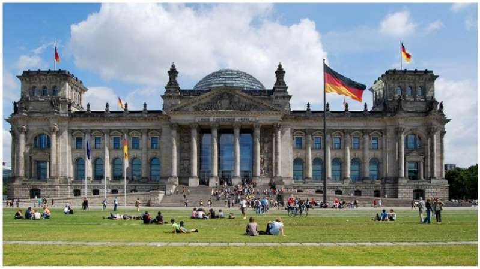
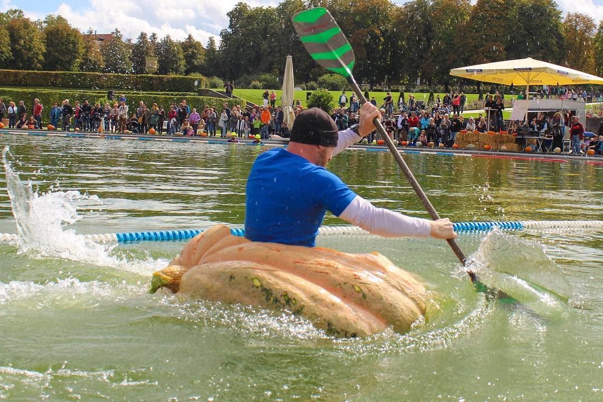
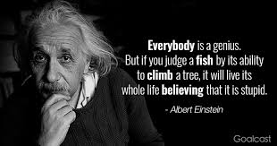

| Nama | Nurlaila Agustina |
|---|---|
| Tempat Tanggal Lahir | Bogor, 22 Agustus |
| Hobi | Bermain sepeda dan membaca buku |
| Makanan Favorit | Bubur, mie ayam, tempe goreng |
| Warna favorit | Biru, abu-abu |

INTRODUCTION ZONE
| Nama | Nurlaila Agustina |
|---|---|
| Tempat Tanggal Lahir | Bogor, 22 Agustus |
| Hobi | Bermain sepeda dan membaca buku |
| Makanan Favorit | Bubur, mie ayam, tempe goreng |
| Warna favorit | Biru, abu-abu |
Talk About Germany
Untuk blog pertama saya, mari kita bahas mengenai negara yang saya kagumi melalui bahasanya. Awalnya saya hanya coba-coba dengan bahasa Jerman, soalnya unik. Ehh, malah ketagihan:). Oke kita mulai serius yaa, seperti yang saya katakan sebelumnya, saya menyukai Jerman melalui bahasanya. Nah, kenapa saya bisa menyukai bahasanya? Teman saya sewaktu smp lahh yang menyebabkannya. Ditahun terakhir smp saya, kebetulan kita sekelas dan entah kenapa saya sedikit-sedikit mulai tertarik dan akhirnya browsing diinternet. Sejak itu saya belum sadar ternyata saya menyukai Jerman dan bahasanya. Tapi, sejak lulus smp saya jadi jarang belajar bahasa Jerman, biasanya ada yang temenin:(. Sekarang baru bisa belajar kalo mau dan ada waktu luang, makin lama kosakata banyak yang ilang dari kepala. Tapi saya ga mau bagi-bagi cerita sisi sedihnya aja niih. Saya mau ajak kalian untuk melihat saya dan Jerman. Ayo kita lihat beberapa fakta menarik tentang Jerman. Check this out!
Yakni, Aachen, Regensburg, Frankfurt-am-Main, Nuremberg, Berlin, Weimar, Bonn (dan Berlin Timur), dan sejak 1990, Berlin lagi. 
Sekitar sepertiga dari wilayah Jerman masih merupakan hutan alami, dengan luas hutan terbesar ada di Hesse. 
Siapa bilang labu cuma bisa jadi sayur atau "perhiasan" saat Halloween? Di Jerman, labu-labu besar justru digunakan sebagai perahu untuk balapan. 
Sebut saja Ferdinand Zeppelin (Penemu balon udara), Carl Zeiss, Konrad Zuse, dan Fisikawan terkenal Albert Einstein, yang juga berasal dari Jerman. 
Nahh, sampai sini aja yaa. Kalo mau lihat yang lebih kompleks dan detail, kalian bisa klik disini!
FAMILY ZONE